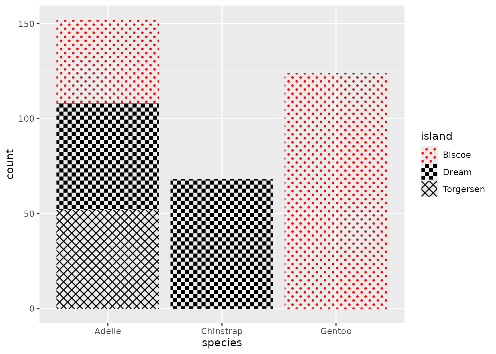

library(ggplot2)
library(grid)
# Some graphics devices don't support gradients and patterns. We set the
# device to ragg, which does support these.
knitr::opts_chunk$set(dev = "ragg_png")Exercises for session 2
Exercise 2.1: Headings
Exercise 2.1.1
We can use the label attribute in columns to automatically label a variable.
Complete the chunk below to set a label attribute for the unemploy column in the economics dataset. Per ?economics, the unemploy variable gives the number of unemployed people in thousands.
Use the first line of code as a template to do the same for the unemploy column.
attr(economics$date, "label") <- "Year"
attr(economics$unemploy, "label") <- "Unemployment (x1000)"
ggplot(economics, aes(date, unemploy)) +
geom_area(alpha = 0.4, colour = "black")
Exercise 2.1.2
If we don’t have pre-set labels, we can also use the labs(dictionary) argument to populate column-label pairs. Use this argument to label the variables in the plot below. You can use ?mpg to find out what the columns are.
The labs(dictionary) argument takes a named character vector of labels. The names of the labels correspond to column names.
ggplot(mpg, aes(displ, hwy, colour = drv)) +
geom_point() +
labs(dictionary = c(
displ = "Displacement",
hwy = "Highway miles per gallon",
drv = "Drive train"
))Exercise 2.2: Patterns and gradients
Exercise 2.2.1
Use grid::linearGradient() to set up a horizontal colour gradient. Which arguments do you have to tweak to change the default diagonal gradient to a horizontal one? How would you set a vertical gradient instead?
If you cannot find inspiration for a colour palette, you can use colour = hcl.colors(100).
For a horizontal gradient, keep y1 and y2 the same. The default.units = "npc", meaning that numeric values you provide these arguments are relative to the panel where 0 means bottom and 1 means top. Which exact value doesn’t really matter for this example, just that they are the same.
gradient <- linearGradient(
colours = hcl.colors(100),
y1 = 0, y2 = 0
)
ggplot(economics, aes(date, unemploy)) +
geom_area(fill = list(gradient), colour = "black")For a vertical gradient, keep x1 and x2 the same. A numeric value of 0 is on the left and a value of 1 is on the right.
gradient <- linearGradient(
colours = hcl.colors(100),
x1 = 0, x2 = 0
)
ggplot(economics, aes(date, unemploy)) +
geom_area(fill = list(gradient), colour = "black")Exercise 2.2.2
The following code sets up a crosshatch pattern that can be used as the fill aesthetic.
width <- height <- unit(3, "mm")
crosshatch <- pattern(
segmentsGrob(
x0 = c(0, 1), x1 = c(1, 0),
y0 = c(0, 0), y1 = c(1, 1),
gp = gg_par(col = "black", lwd = 0.5),
vp = viewport(width = width, height = height)
),
width = width, height = height,
extend = "repeat"
)
ggplot(economics, aes(date, unemploy)) +
geom_area(fill = crosshatch, colour = "black")
Create a new pattern of your liking. Can you design a polka-dot or checkerboard pattern? You can use grid::circleGrob() and grid::rectGrob() for circles and rectangles respectively. We’ll use it to create a manual fill scale of patterns.
It helps to create a viewport(width, height) at the grob-level and coordinate this size with the pattern(width, height) arguments.
It helps to create a viewport(width, height) at the grob-level and coordinate this size with the pattern(width, height) arguments.
You can take the code to create the crosshatch pattern as a template and swap out the segmentsGrob() for another grob.
We’re showing both a polkadot pattern and a checkboard pattern.
polkadot <- pattern(
circleGrob(
x = c(0.2, 0.7), y = c(0.2, 0.7), r = 0.15,
gp = gpar(fill = "red", col = NA),
vp = viewport(width = width, height = height)
),
width = width, height = height,
extend = "repeat"
)
checkerboard <- pattern(
rectGrob(
x = c(0.25, 0.75), y = c(0.25, 0.75),
width = 0.5, height = 0.5,
gp = gpar(fill = "black"),
vp = viewport(width = width, height = height),
),
width = width, height = height,
extend = "repeat"
)
patterns <- list(
polkadot,
checkerboard,
crosshatch,
gradient
)
ggplot(penguins) +
aes(species, fill = island) +
geom_bar() +
scale_fill_manual(values = patterns)
Exercise 2.3.1: Delayed evaluation
In the plot below, can you redirect the alpha aesthetic to represent the count computed variable? For an extra challenge, can you use scale_alpha_continuous() to anchor 0 at complete transparency?
You can use after_stat(count) inside an aes() statement to access the computed variable.
You can use after_stat(count) inside an aes() statement to access the computed variable.
To disable the default fill aesthetic, you can set fill = "black" outside aes().
ggplot(diamonds) +
aes(carat, price) +
stat_bin_2d(
aes(alpha = after_stat(count)),
binwidth = c(0.05, 200),
fill = "black"
) +
scale_alpha_continuous(
range = c(0, 1), # range of output alpha
limits = c(0, NA) # include 0 in data range
)Exercise 2.4.1: Polar coordinates
Plot p displays a Cartesian bar chart of car manufacturers.
p <- ggplot(mpg) +
aes(manufacturer, label = manufacturer) +
geom_bar() +
geom_text(
aes(y = 37),
# Prevent duplicated labels
data = ~ dplyr::filter(.x, !duplicated(manufacturer)),
angle = 90, hjust = 1
) +
scale_x_discrete(guide = "none")
pAdd a coord_radial() with arguments to p to make a half-ring shape coxcomb/windrose chart with nicely displayed text.
A windrose chart is a bar chart in polar coordinates where the base of the bars are anchored in the centre and bars radiate outward.
To achieve a ring shape, you can set the inner.radius argument.
p + coord_radial(
rotate.angle = TRUE,
start = -0.5 * pi, end = 0.5 * pi,
inner.radius = 0.5
)Exercise 2.5.1: Facets
We have the following facetted plot:
p <- ggplot(diamonds) +
aes(carat, price) +
geom_point(shape = ".")
p + facet_wrap(~ cut, dir = "lt")
Given the following code, adapt the facet_wrap() statement to:
- Mirror the facet order
- Place labelled axes at the bottom of every panel
- Place axis ticks on all y-axes
Note that the current order is to start at the top-left and facets are filled from left to right. We can understand this from the level order of the faceting variable.
levels(diamonds$cut)
## [1] "Fair" "Good" "Very Good" "Premium" "Ideal"The mirrored order should start at the top-right and fill from right to left.
ggplot(diamonds) +
aes(carat, price) +
geom_point(shape = ".") +
facet_wrap(
~ cut,
dir = "rt", # "lb" also counts as mirrored
axes = "all",
axis.labels = "all_x"
)